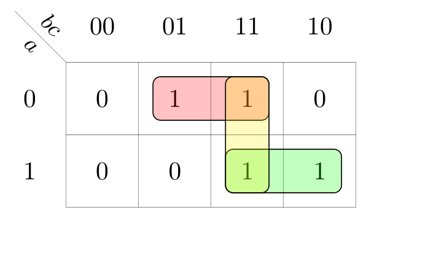

Definizione - Comportamento a regime e in transitorio
Il comportamento di una rete combinatoria a seguito del cambiamento dei segnali di ingresso è detto "comportamento in transitorio" ed è caratterizzato da un'incertezza sul valore dell'uscita, che potrebbe non aver assunto il valore definitivo.
Al termine del transitorio vi è il comportamento a regime, dove l'uscita è coerente rispetto agli ingressi.
I comportamenti in transitorio, se si stanno trattando delle reti combinatorie, non generano problemi che compromettono il funzionamento della rete (generalmente).
Al termine del transitorio vi è il comportamento a regime, dove l'uscita è coerente rispetto agli ingressi.
I comportamenti in transitorio, se si stanno trattando delle reti combinatorie, non generano problemi che compromettono il funzionamento della rete (generalmente).
Definizione - Comportamento in transitorio - Ritardo puro
Il più semplice dei comportamenti in transitorio considerabile è quello del ritardo puro, ovvero l'uscita impiega un certo tempo a variare dal precedente comportamento a regime al successivo.
Nonostante tale comportamento sia ineliminabile, esso non causa particolari problemi.
Nonostante tale comportamento sia ineliminabile, esso non causa particolari problemi.
Definizione - Comportamento in transitorio - Alea dinamica
Una rete è caratterizzata da un comportamento di alea dinamica quando, al variare degli ingressi, l'uscita che dovrebbe variare, durante il transitorio varia più volte (ovvero varia altre volte oltre a quella necessaria) prima di assestarsi sul nuovo valore.
Tale comportamento è dovuto dal fatto che ogni segnale di ingresso di un qualsiasi componente in cascata ha un ritardo differente (dipendente dal suo "livello nella cascata").
Tale comportamento è dovuto dal fatto che ogni segnale di ingresso di un qualsiasi componente in cascata ha un ritardo differente (dipendente dal suo "livello nella cascata").
Nota bene - Alee dinamiche in forme SP o PS?
Proprio perchè tale malfunzionamento è dovuto al fatto che gli ingressi variano in tempi diversi dipendenti da quanti gate si hanno in cascata, è possibile evitare le alee dinamiche utilizzando le forme canoniche SP e PS (sotto l'ipotesi di avere a disposizione i segnali sia in forma vera che negata).
Definizione - Comportamento in transitorio - Alea statica
Una rete è caratterizzata da un comportamento di alea statica quando l'uscita, che al variare degli ingressi dovrebbe rimanere invariata, durante il transitorio varia.
Si ha un alea statica, ad esempio quanto in un gate OR gli ingressi (chiamati \( a\) e \( b\)) devono variare da \( 01\) (\( a = 0\), \( b = 1\)) a \( 10\) (\( a = 1\), \( b = 0\)) (ovvero devono cambiare entrambi gli ingressi). È infatti possibile che i due ingressi varino nei seguenti modi:
Esistono tuttavia altre situazioni che possono generare alee statiche e, questa volta, sono dovute ai ritardi dei gate in cascata (in modo non dissimile alle alee dinamiche).
La soluzione, in questo caso, è adottare un'espressione ridondante (ovvero composta da tutti gli implicanti (o implicati) primi, e non solo da quelli essenziali).
Ad esempio, considerando la seguente mappa di Karnaugh si avrebbe che la copertura minima è la seguente
si avrebbe che la copertura minima è la seguente  ma, per evitare alee statiche, è necessario adottare la seguente copertura È possibile dimostrare infatti (ma ciò non sarà fatto) che si generano alee statiche nel caso una coppia di \( 1\) (nel caso della forma SP) o di \( 0\) (nel caso PS) siano adiacenti ma non compresi nello stesso raggruppamento.
ma, per evitare alee statiche, è necessario adottare la seguente copertura È possibile dimostrare infatti (ma ciò non sarà fatto) che si generano alee statiche nel caso una coppia di \( 1\) (nel caso della forma SP) o di \( 0\) (nel caso PS) siano adiacenti ma non compresi nello stesso raggruppamento.
Si ha un alea statica, ad esempio quanto in un gate OR gli ingressi (chiamati \( a\) e \( b\)) devono variare da \( 01\) (\( a = 0\), \( b = 1\)) a \( 10\) (\( a = 1\), \( b = 0\)) (ovvero devono cambiare entrambi gli ingressi). È infatti possibile che i due ingressi varino nei seguenti modi:
- varia prima il bit \( b\), si ha quindi per un periodo l'uscita data da \( a = 0\) e \( b = 0\), ovvero \( z = 0\) e poi varia \( a\). In questo caso si ha un'alea statica (e un glitch sull'uscita);
- varia prima il bit \( a\), si ha quindi per un periodo l'uscita data da \( a = 1\) e \( b = 1\) ovvero \( z = 1\) e poi varia \( b\). In questo caso non si ha un'alea statica;
Esistono tuttavia altre situazioni che possono generare alee statiche e, questa volta, sono dovute ai ritardi dei gate in cascata (in modo non dissimile alle alee dinamiche).
La soluzione, in questo caso, è adottare un'espressione ridondante (ovvero composta da tutti gli implicanti (o implicati) primi, e non solo da quelli essenziali).
Ad esempio, considerando la seguente mappa di Karnaugh
